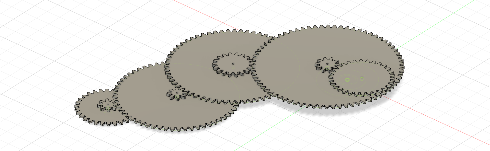
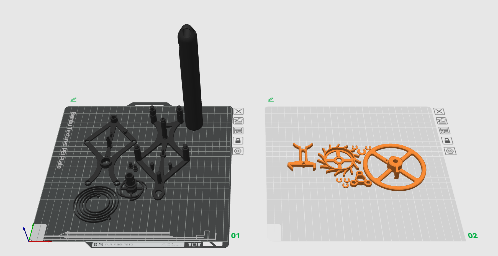
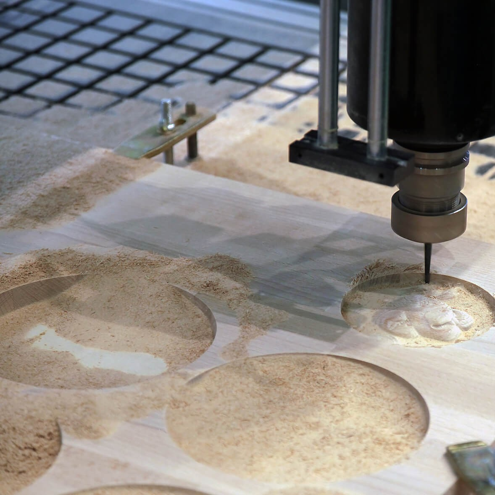

Project
This project documents the design and assembly of a mechanical clock.
Gear train
I Designed a simple gear train to look at the basic principle how an easy mechanical clock works.
| Gear Position | Wheel Teeth | Pinion Teeth |
|---|---|---|
| Escapement | 30 | 8 |
| Intermediate | 60 | 8 |
| Minute | 64 | 18 |
| Intermediate | 72 | 10 |
| Hour | 30 | |
If the escapement gear turns once a minute, a ratio of 60:1 is needed for the minute gear to turn once per hour.
Total ratio escapement to minute wheel: (60/8) × (64/8) = 7.5 × 8 = 60:1
For the hour gear to turn once per hour, a 12:1 ratio is needed from the minute to the hour gear.
Total ratio minute to hour wheel: (72/18) × (30/10) = 4 × 3 = 12:1
Escapement
To try escapement mechanisms a swiss lever escapement was 3D printed moel was taken from Bambulab´s database.
A lathe is a versatile machine tool primarily used to shape workpieces by rotating them around a fixed axis while a cutting tool is fed against the material to remove unwanted parts to create the desired shape. The workpiece is held securely between two supports, either centers or in a chuck mounted on the spindle within the headstock. The main components include the bed (which provides a stable base and guideways), the headstock (housing the spindle and driving mechanism), the carriage (which holds and moves the cutting tool), and the tailstock (providing support at the opposite end of the workpiece).
The fundamental working principle involves the rotation of the workpiece at controlled spindle speeds while the cutting tool is advanced either parallel or perpendicular to the axis of rotation, enabling operations such as turning, facing, threading, grooving, drilling, and taper cutting. The cutting tool can be manually fed or moved automatically via mechanisms like lead screws and feed rods, allowing precise control of depth and feed rates.
Lathes are widely used for producing cylindrical parts with high accuracy and efficiency in industries ranging from manufacturing to prototyping. The process allows working with a variety of materials including metals, plastics, and wood. Traditional manual lathes require skilled operators to set feeds and speeds, while CNC lathes automate these functions to enhance precision and repeatability, using programmed instructions called G-code.
Overall, the lathe remains a fundamental machine tool in production engineering due to its flexibility, precision, and ability to perform numerous machining operations on a rotating workpiece efficiently.